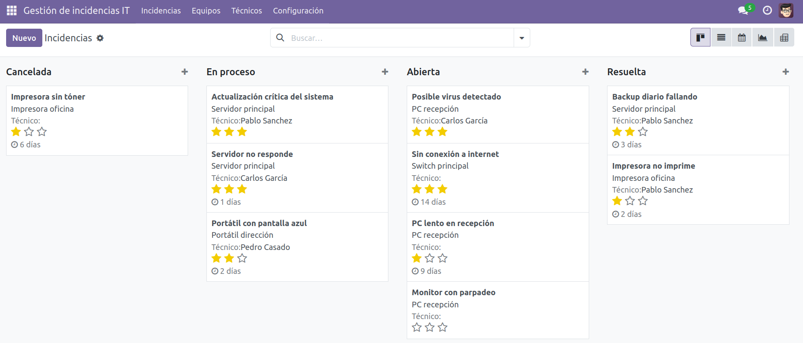
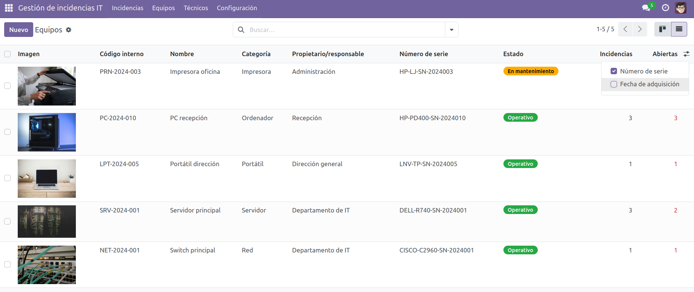
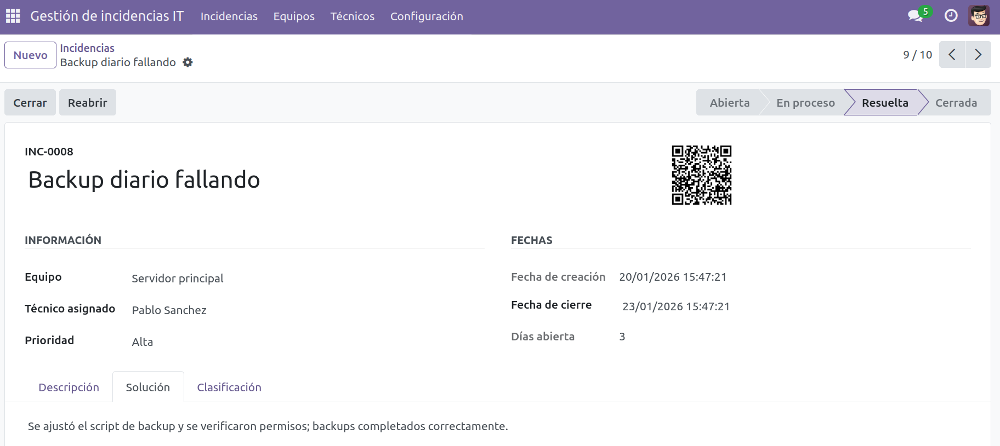
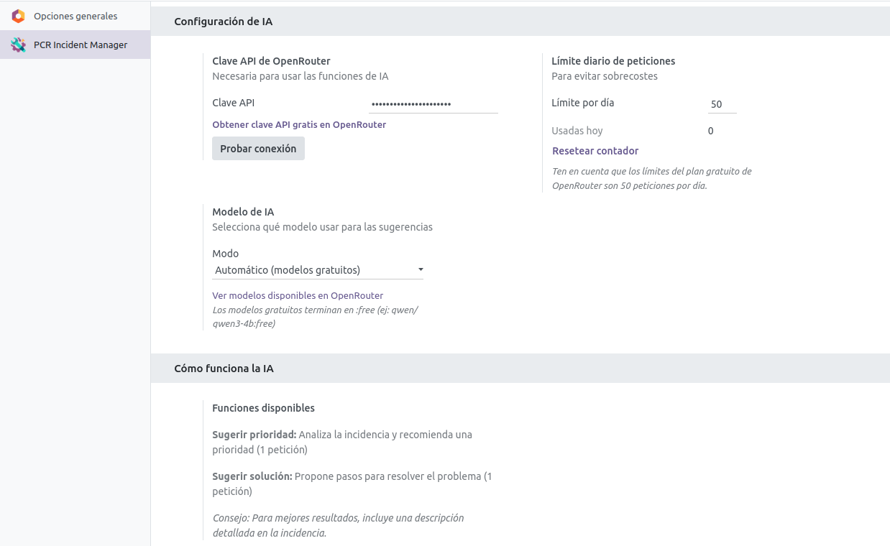

Gestión inteligente de incidencias IT y mantenimiento de equipos con asistencia de IA
Módulo profesional para Odoo diseñado para gestionar incidencias IT, mantenimiento de equipos y soporte técnico de forma centralizada, eficiente y trazable. Ideal para departamentos IT, empresas de soporte técnico y organizaciones que necesiten controlar activos, incidencias y técnicos desde Odoo.



